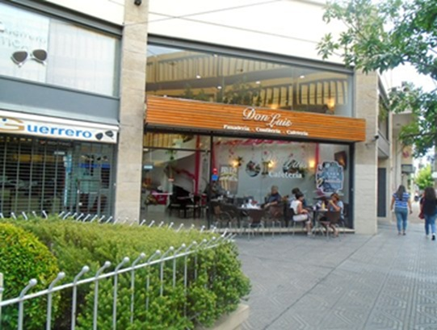
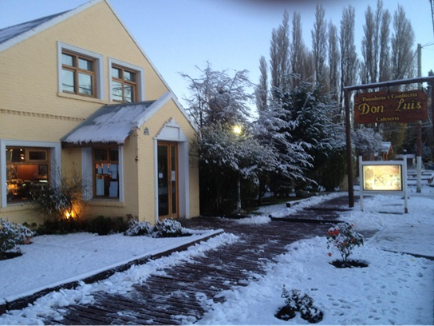

Especialidades & Ambientes
 Nuestras Tortas
Nuestras Tortas

Salón Villa Ballester Masas Finas
Masas Finas

Salón Patagonia Facturas del día
Facturas del día
Desde Buenos Aires hasta el fin del mundo
Lo que comenzó como un pequeño rincón en Villa Ballester, se expandió siguiendo el aroma del café hasta la Patagonia Argentina. En cada sucursal, mantenemos la misma esencia: un refugio cálido, libros para compartir y la mejor pastelería artesanal del país.
Nuestras Tortas

Salón Villa Ballester
Masas Finas

Salón Patagonia
Facturas del día
Prof. F. Agüer 5044, Buenos Aires
Lun a Sab: 07:00 - 20:00
Av. Principal, San Carlos de Bariloche
Todos los días: 08:00 - 21:00